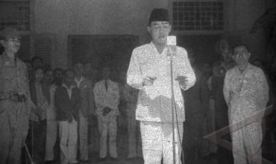

Sebagai negara, Indonesia tentu tak ujug-ujug merdeka. Ada rangkaian cerita panjang yang mengiringinya hingga kemerdekaan diproklamirkan. Berikut sejarah singkat Kemerdekaan Indonesia yang bisa disimak. Hari ini, Indonesia merayakan hari jadinya yang ke-77. Artinya, sudah 77 tahun Indonesia merdeka.
Kemerdekaan Indonesia sendiri tak datang tiba-tiba. Kemerdekaan didapat dari perjuangan dan pengorbanan para pahlawan melawan penjajah. Makna dan arti kemerdekaan tentu sangat besar bagi masyarakat Indonesia.
Berbagai peristiwa penting melatarbelakangi kemerdekaan Indonesia. Dimulai dari Peristiwa Rengasdengklok hingga pembacaan teks proklamasi, berikut sejarahnya.
. . .
Era Kemerdekaan
Penyerahan Jepang terhadap sekutu
Artikel : Menyerahnya Jepang
Setelah menjajah Indonesia sejak 1942 silam, Jepang takluk di tangan sekutu Belanda pada 15 Agustus 1945. Berita kekalahan Jepang pun terdengar bersamaan dengan persiapan kemerdekaan Indonesia.
Peristiwa Rengasdengklok
Artikel : Rengasdengklok
Peristiwa Rengasdengklok turut menjadi bagian dari sejarah singkat kemerdekaan Indonesia. Kala itu, sejumlah pemuda seperti Chaerul Saleh, Wikana, dan lainnya menculik Soekarno dan Mohammad Hatta ke Rengasdengklok pada 16 Agustus 1945.
Penculikan terjadi akibat tidak disetujuinya tuntutan mereka untuk segera memproklamirkan kemerdekaan. Soekarno dkk menganggap bahwa keputusan tersebut bisa menyebabkan pertumpahan darah antara kekuasaan Jepang yang saat itu belum sepenuhnya diambil alih oleh Indonesia.
Di sana, mereka berunding hingga mencapai kesepakatan proklamasi kemerdekaan akan diumumkankeesokan harinya. Dengan perjanjian itu, Soekarno dan Hatta kembali dibawa ke Jakarta.
Perumusan Teks Proklamasi Kemerdekaan
Artikel : Proklamasi Kemerdekaan
Dengan adanya peristiwa Rengasdengklok, akhirnya Soekarno dan Hatta tergerak untuk segera memproklamasikan kemerdekaan. Rapat perumusan teks proklamasi pun digelar di rumah Laksamana Tadashi Maeda pada tanggal yang sama, dihadiri oleh beberapa anggota golongan muda.
Di sana, rumusan teks proklamasi ditulis oleh Soekarno dan diketik oleh Sayuti Melik dengan beberapa perubahan.
Pembacaan Teks Proklamasi Kemerdekaan
Usai teks proklamasi selesai ditulis, terjadilah hari paling bersejarah bagi bangsa Indonesia. Kemerdekaan Indonesia ditandai dengan pembacaan teks proklamasi oleh Soekarno pada tanggal 17 Agustus 1945.
Pembacaan tersebut dihadiri oleh para tokoh pergerakan kemerdekaan dan seluruh rakyat Indonesia yang ingin menyaksikan buah hasil dari perjuangan para pahlawan dan tokoh penting yang membawa mereka ke kemerdekaan.
Upacara pembacaan teks proklamasi tersebut berjalan dengan lancar bertempat di kediaman Soekarno di Jalan Pegangsaan Timur No. 56, Jakarta.
Beberapa acara telah disusun dalam hari kemerdekaan Indonesia, seperti pengibaran bendera Merah Putih, dan sambutan oleh walikota pada saat itu, yaitu Suwiryo dan Muwardi.
Video : Pembacaan Teks Proklamasi
Penyebarluasan proklamasi kemerdekaan Indonesia
Artikel : Penyebaran Teks Proklamasi
Tak berhenti sampai pembacaan teks proklamasi saja, berita kemerdekaan Indonesia perlu disebarluaskan.
Berita kemerdekaan disebarkan melalui Hoso Kanri Kyoku atau yang saat ini dikenal dengan Radio Republik Indonesia (RRI) dan Domei (Antara).
Selain itu, mereka juga menyebarluaskan berita kemerdekaan lewat surat kabar Suara Asia dan juga melalui mulut ke mulut.
Demikian sejarah singkat kemerdekaan Indonesia yang seyogianya dipahami dan dimaknai masyarakat.